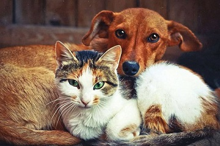

- 
животные
Домашние животные — животные, которые были одомашнены человеком разумным и которых он содержит, предоставляя им кров и пищу. Они приносят ему пользу либо как источник материальных благ и услуг, либо как животные-компаньоны, скрашивающие его досуг. Большинство домашних животных легко размножаются. Проводя селекцию, человек может контролировать их размножение и признаки, которые они передают своему потомству. Часть домашних животных (сельскохозяйственные животные) приносит непосредственную материальную выгоду человеку, например, являясь источником пищи (молоко, мясо), материалов (шерсть, кожа). Другие животные (рабочий скот и служебные животные) приносят пользу человеку, выполняя рабочие функции (перевозка грузов, охрана и т. п.). Вторая большая категория — это животные-компаньоны, которые занимают досуг, доставляют удовольствие и с которыми можно общаться. Для городских жителей понятие «домашние животные» чаще ассоциируется со второй категорией, то есть с «домашними любимцами (питомцами)». Многие семьи, которые держат дома каких-нибудь животных, отмечают, что эти животные создают уют, успокаивают, снимают стресс.